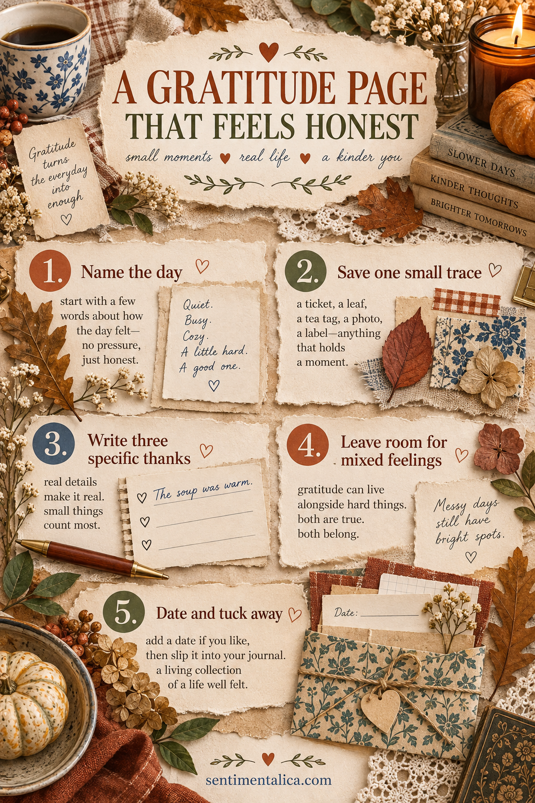
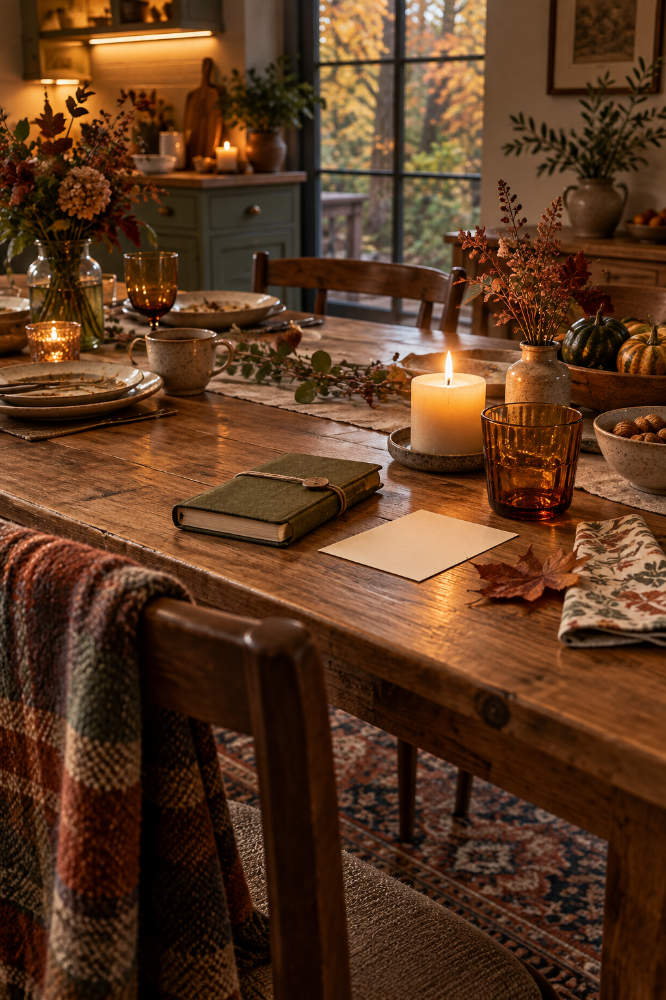

Thanksgiving can be warm and complicated at the same time. A gratitude page does not need to erase tiredness, grief, distance or a messy kitchen. The honest version gives the good moments a place without pretending they were the whole day.
Make this page after the meal or the next morning. All you need is a journal, a pen, one small trace from the day and perhaps a scrap of warm-toned paper.
Start with the day as it was
Write three plain words at the top of the page. They could be “loud, tender, late” or “quiet, strange, kind.” Avoid making the words perform happiness. Their job is to bring you back to the actual day when you reread the page months later.
If Thanksgiving was spent alone, the same method works. A cup you enjoyed, a message received or the relief of a calm evening can be worth remembering without comparing your day with someone else’s celebration.
Save one small trace
Choose a physical clue: a clean paper napkin corner, a place card, a leaf from a walk, a grocery label, a handwritten menu fragment or a photograph. Keep it small enough that it does not fill the entire spread.
Attach it to a calm backing paper, or make a shallow pocket so it can be lifted out. If the item has personal information, cover or crop it before adding it to the page.
Write three specific thanks
Move from general categories to scenes. Instead of “family,” write “the way Aunt June remembered I take tea without sugar.” Instead of “food,” write “the first warm spoonful after coming in from the cold.” Instead of “home,” write “the quiet ten minutes after everyone left.”
Three details are enough. Let one be about a person, one about a sensory moment and one about something you learned or managed. They do not have to be equally important.

Leave room for what was hard
Make a small fold or hidden note for a sentence that does not belong in a public gratitude list: “I missed someone,” “I was overwhelmed,” or “This year felt different.” The page will be more trustworthy when both truths can sit together.
If you would rather not preserve that sentence, leave an empty space. An honest page can acknowledge complexity without documenting every private detail.
Give the page a quiet structure
Use cream as the largest area, then two warm accents such as rust and olive. Put the saved trace to one side, the three thanks in a vertical column, and the private fold near the bottom. Date the page on a narrow tag before closing the journal.
Do not glue over your writing space. Arrange everything dry first and read the page once at arm’s length. If a decorative element attracts more attention than the words, reduce it.

An optional paper source
The page works with household scraps. If you want illustrated harvest texture, the live Autumn Harvest collection is an on-theme option for farmhouse and autumn imagery. Browse the listing to confirm which sheets suit your story; the page should still be about your real day, not the printable art.
Gratitude is often clearest when it is modest. A warm bowl, an honest conversation and one little paper trace can make a page that feels like your life.